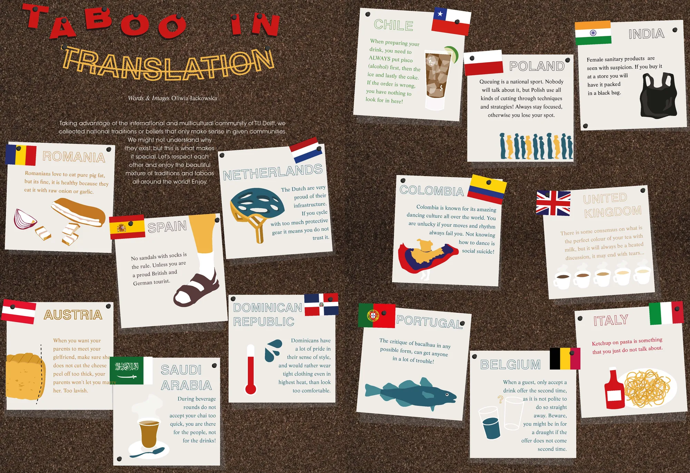

Taboo in translation
Taking advantage of the international and multicultural community of TU Delft, we collected national traditions or beliefs that only make sense in given communities. We might not understand why they exist, but this is what makes it special. Let’s respect each other and enjoy the beautiful mixture of traditions and taboos all around the world! Enjoy.

Romanians love to eat pure pig fat, but its fine, it is healthy because they eat it with raw onion or garlic.
Spain
No sandals with socks is the rule. Unless you are a proud British and German tourist.
Austria
When you want your parents to meet your girlfriend, make sure she does not cut the cheese peel off too thick, your parents won't let you marry her. Too lavish.
Saudi Arabia
During beverage rounds do not accept your chai too quick, you are there for the people, not for the drinks!
Netherlands
The Dutch are very proud of their infrastructure. If you cycle with too much protective gear it means you do not trust it.
Dominican Republic
Dominicans have a lot of pride in their sense of style, and would rather wear tight clothing even in highest heat, than look too comfortable.
Colombia
Colombia is known for its amazing dancing culture all over the world. You are unlucky if your moves and rhythm always fail you. Not knowing how to dance is social suicide!
Portugal
The critique of bacalhau in any possible form, can get anyone in a lot of trouble!
Chile
When preparing your drink, you need to ALWAYS put pisco (alcohol) first, then the ice and lastly the coke. If the order is wrong, you have nothing to look for in here!
Poland
Queuing is a national sport. Nobody will talk about it, but Polish use all kinds of cutting through techniques and strategies! Always stay focused, otherwise you lose your spot.
India
Female sanitary products are seen with suspicion. If you buy it at a store you will have it packed in a black bag.
United Kingdom
There is some consensus on what is the perfect colour of your tea with milk, but it will always be a heated discussion, it may end with tears...
Italy
Ketchup on pasta is something that you just do not talk about.
Belgium
When a guest, only accept a drink offer the second time, as it is not polite to do so straight away. Beware, you might be in for a draught if the offer does not come second time.